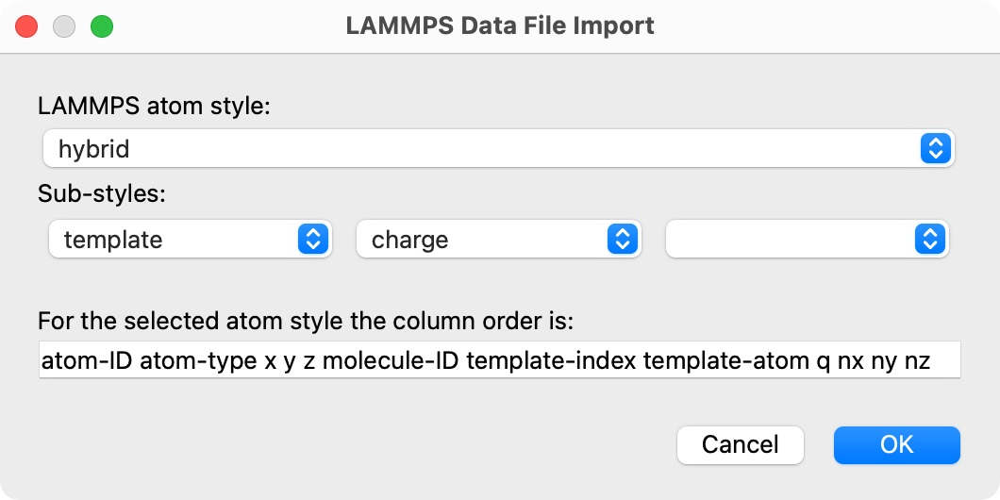

LAMMPS data file reader
User interface of the LAMMPS data reader, which appears as part of a pipeline’s file source.
For loading model structures used with the LAMMPS simulation code.
Supported format variants
The file reader can load files conforming to the format specification of the LAMMPS read_data command. Such files may be produced by LAMMPS’ own write_data command or external structure building tools.
OVITO’s data file reader can directly parse gzipped files (“.gz” suffix).
The reader loads a complete particles model including topological information (bonds, angles, dihedrals, impropers) if present.
OVITO maintains atoms in the order in which they are stored in the data file.
The unique ID associated with each atom is used to identify individual atoms in different trajectory frames even if the storage order changes
during the simulation.
If an ordered atoms list is desired, the data file reader provides a user option making it sort the atoms by ID during import
(sort_particles=True keyword parameter in Python, see below).
LAMMPS atom style
In LAMMPS, the selected atom style determines what attributes are associated with each atom. Depending on this choice, a data file contains different data columns in the Atoms section of the file. For OVITO to correctly parse a data file, it must first guess the atom style that is used in the simulation.
A typical practice is to make it easier for an application like OVITO to parse a data file by including the atom style as a comment in the Atoms section line:
Atoms # full
1 2 4 -0.159 49.37632 62.94025 48.46742
2 2 5 0.053 49.75864 63.35641 49.41517
...
This tells the file reader to assume the full atom style. Subsequently, it will parse the 7 columns (atom-ID molecule-ID atom-type q x y z)
that are mandated by the full style according to the specification.
If the file does not contain an atom style hint as shown above, then OVITO will ask you to specify the correct atom style during file import by displaying the following dialog box:
{kind=link}
Here, you can also specify the list of sub-styles in case the special hybrid atom style is used by your simulation model.
Python parameters
The file reader accepts the following optional keyword parameters in a call to the import_file() or load() Python functions.
- import_file(location, atom_style=None, atom_substyles=None, sort_particles=False)
- Parameters:
atom_style (str) – Specifies the LAMMPS atom style used in the data file. Required if the data file contains no style hint.
atom_substyles (list[str]) – List of sub-styles. Required if the data file contains no style hint and the simulation model uses the
hybridatom style.sort_particles (bool) – Makes the file reader reorder the loaded particles before passing them to the pipeline. Sorting is based on the values of the
Particle Identifierproperty loaded from the data file.